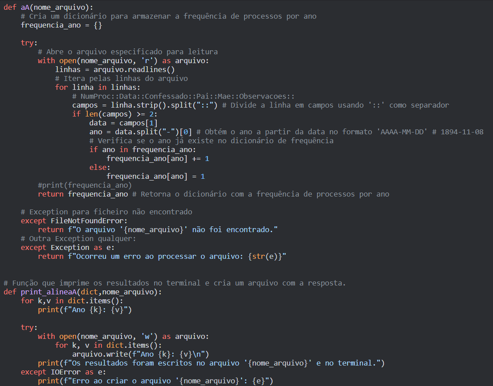
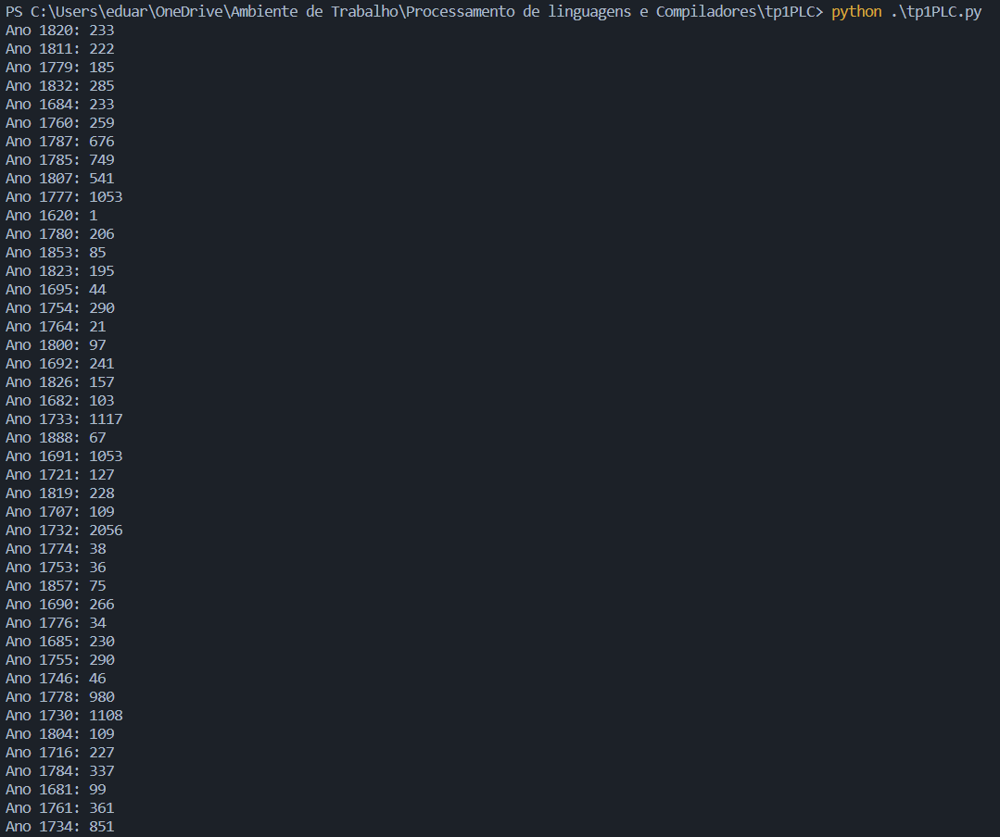

Processador de Pessoas listadas nos Róis de Confessados
Calcular a frequência de Processos por ano (primeiro elemento da data);


----------
Solução Completa da Alinea A----------
Calcular a frequência de Processos por ano (primeiro elemento da data);
----------
Solução Completa da Alinea A----------